|
Vishnu Asutosh Dasu
vdasu at psu dot edu
I am a PhD student in computer science (PhD CSE) at the Pennsylvania
State University. I am advised by Prof. Gang Tan
and work on developing secure and trustworthy software and machine learning systems. Currently, I am
working on trustworthy code generation LLMs and fairness of LLMs. In general, I am interested in
topics in the intersection security, privacy, and machine learning.
CV /
Google Scholar
/
LinkedIn /
Twitter /
GitHub
My Erdős number is 4: Paul Erdős →
Israel Koren → Francesco Regazzoni → Takanori Isobe → Vishnu Asutosh Dasu
I would love to collaborate with like-minded researchers and am open to opportunities. Please
reach out to me if you're interested!
|
|
|
News
|
- March 2025: Our paper Attention Pruning: Automated Fairness Repair of Language Models via Surrogate Simulated Annealing is out on arXiv!
- March 2025: Our paper Impact of Data Duplication on Deep Neural Network-Based Image Classifiers: Robust vs. Standard Models has been accepted at the Deep Learning Security
and Privacy Workshop (IEEE S&P 2025)! 🎉🎉
- January 2025: Received the Internet Society Fellowship to attend NDSS 2025! 🎉🎉
- November 2024: Our paper Privacy-Preserving Data Deduplication for Enhancing
Federated
Learning of Language Models has been accepted at Network and Distributed System Security
(NDSS) Symposium, 2025! 🎉🎉
- August 2024: Joined the CSE PhD program at Penn State!
- July 2024: Our paper Privacy-Preserving Data Deduplication for Enhancing Federated
Learning of Language Models is out on arXiv!
- July 2024: Our paper NeuFair: Neural Network Fairness Repair with Dropout has
been
accepted at ACM ISSTA 2024!
- March 2024: Passed my Master's defense!!
- January 2024: Employed by Penn State as the Head Graduate Teaching Assistant for CMPSC
465: Data Structures and Algorithms, Spring 2024.
- December 2023: Submitted my thesis research on mitigating unfairness in deep learning
to ACM ISSTA 2024!
- October 2023: Our paper FLTrojan: Privacy Leakage Attacks against Federated
Language Models Through Selective Weight Tampering is out on arXiv!
- October 2023: Our paper EvoquerBot: A multimedia chatbot leveraging synthetic data
for cross-domain assistance has been published at Alexa Prize TaskBot Challenge 2
Proceedings!
- August 2023: Joined the OpenMined Research
Team as a Researcher!
- August 2023: Employed by Penn State as the Head Graduate Teaching Assistant for CMPSC
465: Data Structures and Algorithms, Fall 2023.
- June 2023: Graduated
from OpenMined's Padawan
Program!
- May 2023: Started working with Prof. Gary
Tan and Prof. Saeid Tizpaz-Niari as a Summer
Research Assistant! Working on mitigating unfairness in deep learning models.
- May 2023: Got a GPA of 3.9 this semester! Courses: CSE 587: Deep Learning for NLP (A),
CSE 597: Security and Privacy of ML (A), DS 560: Causal Inference (A-), CSE 590: Colloquium (A)
- April 2023: Our paper New Results on Machine Learning-Based Distinguishers has
been accepted at IEEE Access!
- April 2023: Selected to join OpenMined's Padawan Program!
- February 2023: Started working with Prof. Shagufta
Mehnaz on developing attacks to extract private data from federated language models!
- February 2023: Started working with Prof. Rui
Zhang on developing language models for our team EvoquerBOT
in the Alexa Prize
TaskBot Challenge 2!
- December 2022: Got a perfect 4.0 GPA this semester! Off to a good start! Courses: IST
597: Adversarial Machine Learning, CSE 543: Computer Security, CSE 511: Operating Systems
Design
- November 2022: Selected to attend the Winter School on
Responsible AI in The Dead Sea, Israel with a scholarship!
- September 2022: Our paper PROV-FL: Privacy-preserving Round Optimal Verifiable
Federated Learning has been accepted at the 15th ACM AISec Workshop co-located with ACM
CCS
2022!
- August 2022: Employed by Penn State as a Graduate Teaching Assistant for CMPSC 465:
Data Structures and Algorithms, Fall 2022.
- August 2022: Joined the MS CSE program at Penn State
University Park!
|
|
Publications (Selected)
|
|
Without special annotation (* represents equal contribution), authorship is in order of contribution as per the conventions of security and machine learning research.
|
|
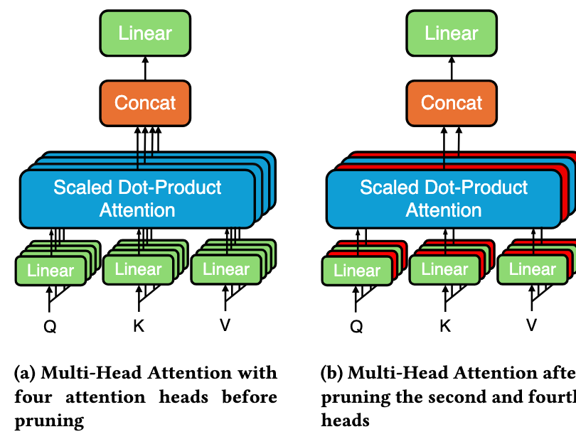
|
Attention Pruning: Automated Fairness Repair of Language Models via Surrogate Simulated Annealing
Vishnu Asutosh Dasu, Md Rafi ur Rashid, Vipul Gupta, Saeid Tizpaz-Niari, Gang Tan
arXiv (under review at conference)
We explore pruning attention heads as a post-processing bias mitigation method for large language models (LLMs), addressing fairness concerns as LLMs expand into sensitive social contexts. Our Attention Pruning approach, using fairness-aware surrogate simulated annealing, achieves up to 40% reduction in gender bias and outperforms state-of-the-art bias mitigation strategies.
|
|
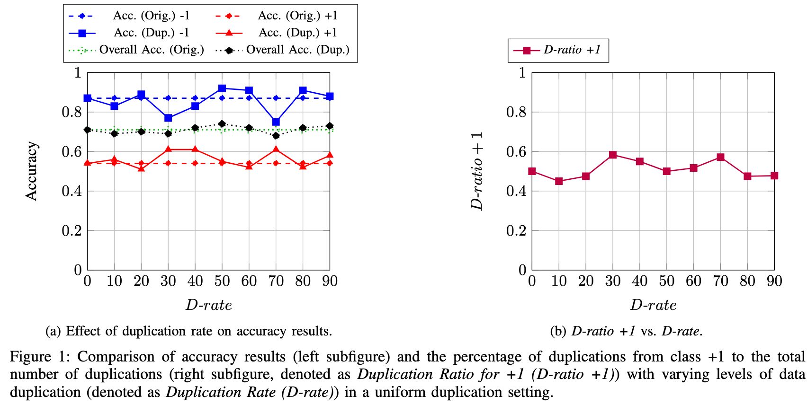
|
Impact of Data Duplication on Deep Neural Network-Based Image Classifiers: Robust vs. Standard Models
Alireza Aghabagherloo, Aydin Abadi, Sumanta Sarkar, Vishnu Asutosh Dasu, Bart Preneel
IEEE Deep Learning Security and Privacy Workshop (DLSP), IEEE S&P 2025
(Acceptance Rate: 61.5%)
We study the impact of duplicated images in training sets on image classifier performance, showing that duplication negatively affects training efficiency and accuracy, especially in adversarially trained models. The detrimental effect is more pronounced when duplication is uneven across classes, and increasing uniform duplication offers no significant accuracy improvement.
|
|
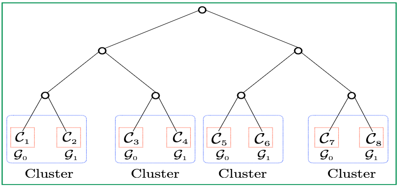
|
Privacy-Preserving Data Deduplication for Enhancing Federated
Learning of Language Models
Aydin Abadi*, Vishnu Asutosh Dasu*, Sumanta Sarkar*
Network and Distributed
System Security (NDSS) Symposium, 2025
(Acceptance Rate: 16.09%)
We develop a novel variant of the Private Set Intersection (PSI) protocol that securely removes all
pairwise duplicates among datasets held by two more users in federated learning. Our protocl
preserves user privacy and does not reveal any information about the datasets to the users and
server. The deduplication protocol results in significant improvement to LLM perplexity and reduces
GPU training time.
|
|
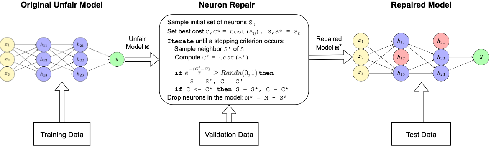
|
NeuFair: Neural Network Fairness Repair with Dropout
Vishnu Asutosh Dasu, Ashish Kumar, Saeid Tizpaz-Niari, Gang Tan
The 33rd ACM SIGSOFT International Symposium on Software Testing and Analysis (ISSTA), 2024
(Acceptance Rate: 20.6%)
We develop randomized algorithms to mitigate unfairness in deep learning by dropping a subset of
neurons from a trained neural network during at inference time. Our results show that a subset of
neurons disparately contributes to unfairness and dropping them out during inference can improve
fairness by up to 69%.
|
|
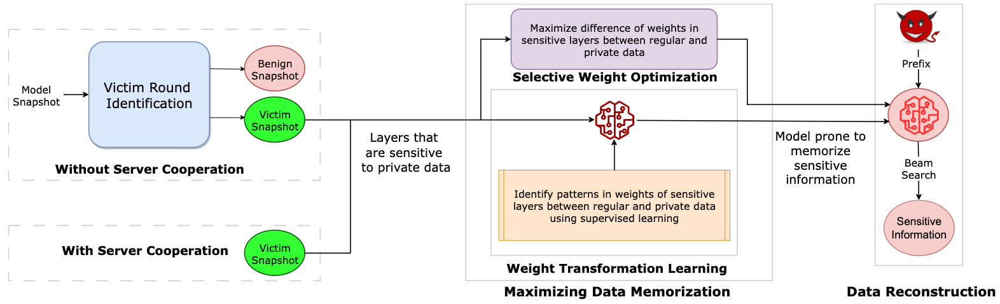
|
FLTrojan: Privacy Leakage Attacks against Federated Language Models Through Selective
Weight Tampering
Md Rafi ur Rashid, Vishnu Asutosh Dasu, Kang Gu, Najrin Sultana, Shagufta Mehnaz
arXiv
We introduce two novel privacy leakage attacks against federated language models. First, we show
that intermediate model snapshots can leak more sensitive data than the final trained model. Second,
we show that tampering with a model's selective weights responsible for memorizing sensitive data
can aggravate privacy leakage. Our best-performing method outperforms existing attacks with stronger
adversary assumptions.
|
|
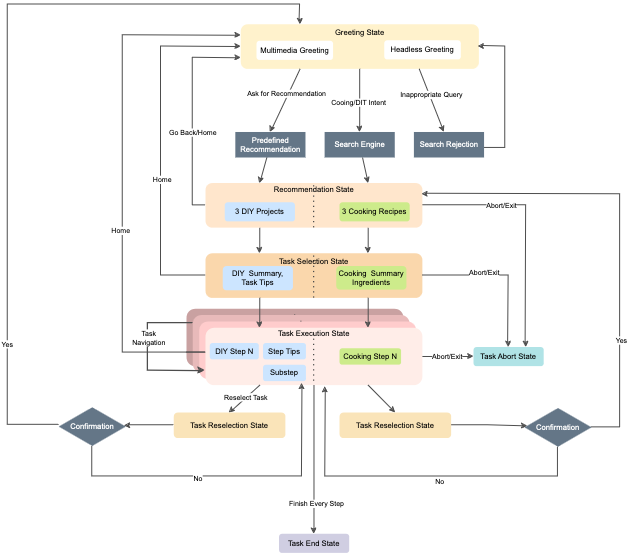
|
EvoquerBot: A multimedia chatbot leveraging synthetic data for cross-domain assistance
Team
EvoquerBOT, Penn State University
Alexa Prize TaskBot Challenge 2 Proceedings, 2023
EvoquerBot is a multimedia chatbot developed for the TaskBot challenge, aimed at assisting users
with cooking and DIY tasks in a single session. The bot addresses challenges like short development
time, data quality, multimedia responses, and tailored conversation flow using agile classifier
development, data augmentation, multimedia response design, and domain-specific dialogue state
machines, ultimately improving user experience through superior task recommendations.
|
|
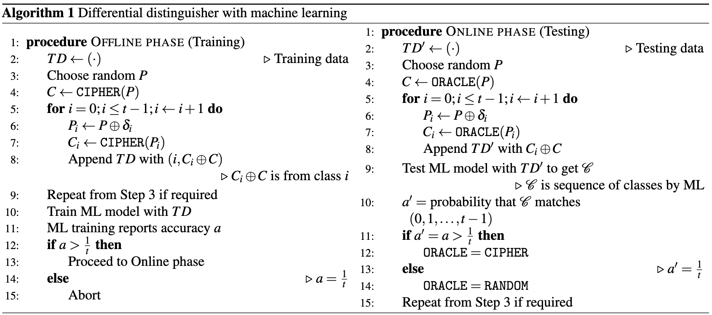
|
New Results on Machine Learning-Based Distinguishers
Anubhab Baksi, Jakub Breier, Vishnu Asutosh Dasu, Xiaolu Hou, Hyunji Kim, Hwajeong
Seo
IEEE Access, 2023
(Acceptance Rate: 27.0%)
ePrint
We show new machine learning differential distinguishers for unkeyed and round-reduced versions of
SPECK-32, SPECK-128, ASCON, SIMECK-32, SIMECK-64, and SKINNY-128. Our comprehensive experiments
utilize neural networks and support vector machines in various settings and numerous input
difference tuples.
|
|
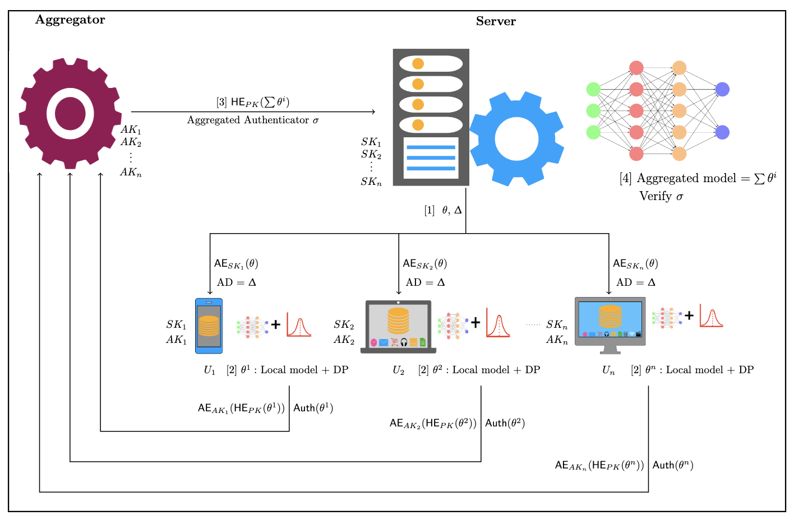
|
PROV-FL: Privacy-preserving Round Optimal Verifiable Federated Learning
Vishnu Asutosh Dasu, Sumanta Sarkar, Kalikinkar Mandal
ACM Workshop on Artificial Intelligence and Security (AISec), ACM CCS
2022
(Acceptance Rate: 35.0%)
We propose PROV-FL, a secure and private federated learning protocol. PROV-FL utilizes homomorphic
encryption and differential privacy to provide strong privacy guarantees. It is resilient to user
dropouts/joins, supports verifiable aggregation, and requires only a single round of communication
without a full-trusted third party.
|
|
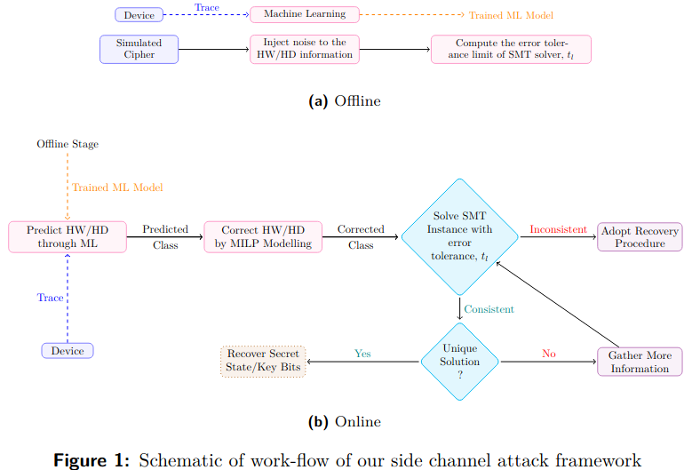
|
Side Channel Attack On Stream Ciphers: A Three-Step Approach To State/Key Recovery
Satyam Kumar, Vishnu Asutosh Dasu, Anubhab Baksi, Santanu Sarkar, Dirmanto Jap, Jakub
Breier, Shivam Bhasin
IACR Transactions on Cryptographic Hardware and Embedded Systems (CHES), 2022
(Acceptance Rate: 18.6%)
code (Artifact
Evaluated)
We propose an end-to-end solution to perform SCA on stream ciphers by combining automated tools such
as ML, MILP, and SMT. We demonstrate its efficacy by taking electromagnetic traces from a 32-bit
software platform and performing SCA on the TRIVIUM stream cipher.
|
|
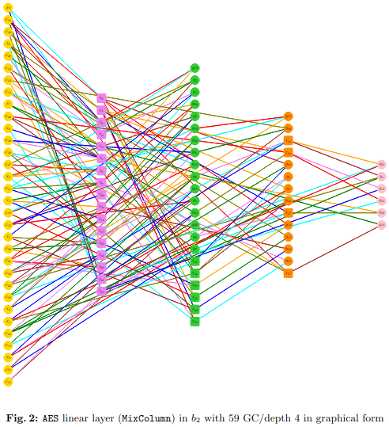
|
Three Input Exclusive-OR Gate Support for Boyar-Peralta's Algorithm
Anubhab Baksi, Vishnu Asutosh Dasu, Banashri Karmakar, Anupam Chattopadhyay, Takanori
Isobe
INDOCRYPT, 2021
talk /
ePrint /
code
We develop a method to extend the Boyar-Peralta's
algorithm to use XOR3 gates, add XOR3 gates to existing XOR2 implementations, and
show several SOTA results on the linear layers of block ciphers using different logic libraries.
|
|
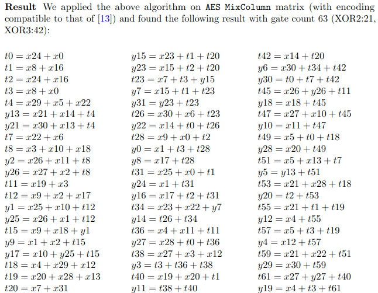
|
Further Insights On Implementation Of The Linear Layer
Anubhab Baksi, Banashri Karmakar, Vishnu Asutosh Dasu, Dhiman Saha, Anupam
Chattopadhyay
Security and Implementation of Lightweight Cryptography Workshop (SILC), EUROCRYPT 2021
We provide new insights for different notions of XOR count, develop methods to find sequential XOR
count implementations using SMT and MILP, and present new results using XOR3 gates on the AES
MixColumn matrix.
|
|
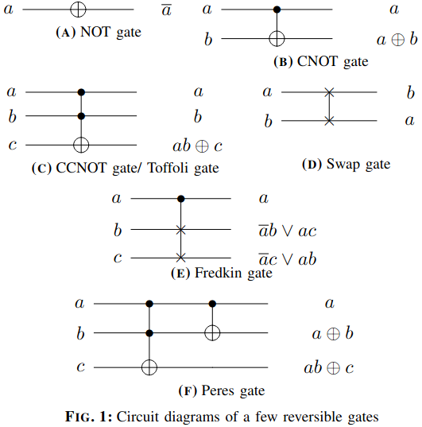
|
LIGHTER-R: Optimized Reversible Circuit Implementation For SBoxes
Vishnu Asutosh Dasu, Anubhab Baksi, Sumanta Sarkar, Anupam Chattopadhyay
IEEE International System-on-Chip Conference (SOCC), 2019
code
We develop a framework that extends LIGHTER to
add support for generating optimized implementations of 4x4 SBoxes using reversible logic libraries.
|
|
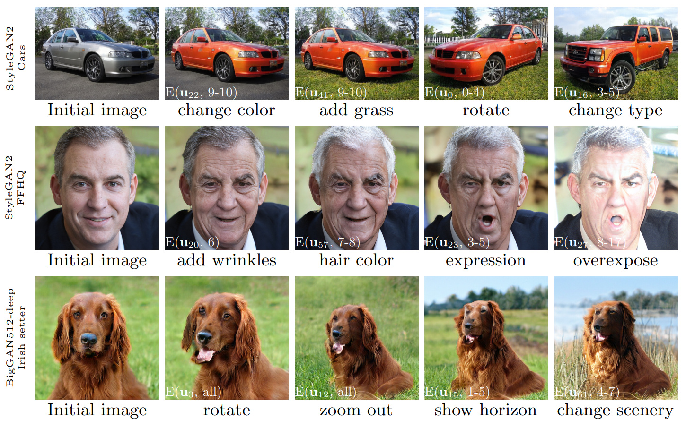
|
[Re] GANSpace: Discovering Interpretable GAN Controls
Vishnu Asutosh Dasu, Midhush Manohar T.K.
ReScience C, Volume 8, Issue 2, 2022
project page /
code (Artifact
Evaluated) /
openreview /
colab /
blog
We reproduce the results and validate the claims presented in GANSpace: Discovering Interpretable GAN Controls.
|
|
Awards
|
- Internet Society Fellowship: Received the Internet Society Fellowship to attend and
present my work at NDSS 2025.
- TCS Citation Award (3-time Recipient): Received the TCS Citation Award and appreciation
from the Chief Technical Officer and Head of TCS Research thrice for performance and outstanding
contribution to the organization.
- Scholarship: Received a scholarship to attend the Winter School on
Responsible AI in The Dead Sea, Israel.
- Best Project Award: Received the Best Project Award among 13 teams during the Fifth
Summer School on Computer
Vision, Graphics and Image Processing, Indian Statistical Institute (ISI) Kolkata.
- IGVC: Placed 2nd in the Interoperability Profiles Challenge and 9th overall at
Intelligent Ground Vehicle Competition (IGVC) 2018 among 26 teams. Second-best among all
teams from India.
- ACM ICPC Regionals: Represented Manipal Institute of Technology, Manipal at the 2017
ACM ICPC Asia Regional Contest.
- DAGsHub Award: Received a $500 award from DAGsHub for successfully reproducing
GANSpace: Discovering Interpretable GAN Controls and completing the ML Reproducibility
Challenge Spring 2021.
|
|
Service
|
- Reviewer for ReScience, 2022 -
- Reviewer for IEEE Access, 2025
- External Reviewer for NDSS 2025, OOPSLA 2025
- Judge for Penn State Undergraduate Exhibition 2025
- Organizer for Penn State Security Reading Group
|
|
Teaching Experience
|
- Head Teaching Assistant: CMPSC 465: Data Structures and Algorithms (Fall 2023, Spring 2024)
- Teaching Assistant: CMPSC 465: Data Structures and Algorithms (Fall 2022)
|
|
Talks
|
- Privacy-Preserving Data Deduplication for Enhancing Federated Learning of Language Models at NDSS 2025, San Diego, USA
- Attention Pruning: Automated Fairness Repair of Language Models via Surrogate Simulated Annealing at Penn State AI Week 2025
- NeuFair: Neural Network Fairness Repair with Dropout at ACM ISSTA 2024, Vienna, Austria
- Mitigating Unfairness in Deep Learning at Penn State Industry Day
- Secure Code Generation using LLMs at Penn State Security Reading Group (slides)
|
|
Technical Reports
|
|
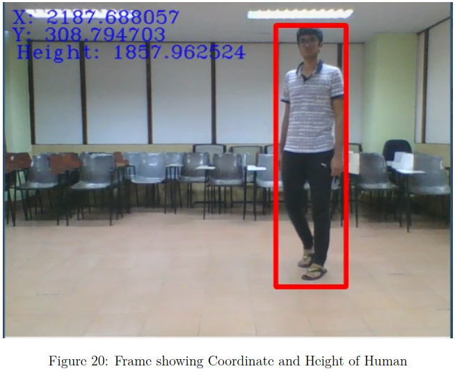
|
"Where's Waldo?"
Ritwik Sarkar* and Vishnu Asutosh Dasu*
Presented at the Fifth Summer School on Computer Vision, Graphics, and Image Processing,
Indian Statistical Institute (ISI), Kolkata, 2018
slides
Recipient of the Best Project Award
We develop a technique to determine the 3D coordinates of a human from a live video feed using a
camera with a single lens (monocamera setup).
|
|
Professional Memberships
|
- Student Member of the ACM
- Student Member of IEEE
|
|
Hobbies
I enjoy powerlifitng, playing the guitar, and reading about history, theology, and philosophy.
|
|
{kind=link}